🏥 간호학과 사용설명서 - ESG
영상 컷 구성안 (대전과학기술대학교 간호학과)
⚠️ 공모전 관련 확인 필요
공모전에는 사용 가능하나, 우리가 영상을 제출하는 공모전 심사에서 "스톡영상 사용 가능 여부" 문의가 필요합니다. (스톡이미지·AI 생성물 사용 가능한지, 아니면 "직접 찍은" 영상물만 이용해야 하는지 확인 필요)
※ 일단은 스톡이미지 사용 가능하다고 가정하고 컷별 구성을 설명합니다.
공모전에는 사용 가능하나, 우리가 영상을 제출하는 공모전 심사에서 "스톡영상 사용 가능 여부" 문의가 필요합니다. (스톡이미지·AI 생성물 사용 가능한지, 아니면 "직접 찍은" 영상물만 이용해야 하는지 확인 필요)
※ 일단은 스톡이미지 사용 가능하다고 가정하고 컷별 구성을 설명합니다.
📄 스톡 영상 라이센스 정보
스톡 영상은 magnific.com에서 프리미엄 라이센스 영상을 유료 결제 후 다운로드한 자산입니다.
Premium License 허용 범위
- 개인 및 상업적 프로젝트에 사용 가능
- 디지털·인쇄 매체 사용 가능 (웹·앱·영상·광고 등)
- 자산 수정 및 2차 창작물 제작 가능
- 전 세계 무제한 사용 가능
CUT 01 · 오프닝

"여러분, 저는 오늘 간호학과 사용설명서를 여러분들께 알려드릴 거예요."
스톡영상 사용
CUT 02

"간호학과… 사용설명서…?"
스톡영상 사용
CUT 03

"무슨 말인가 싶으실 텐데요. 일단 제 얘기를 좀 들어보세요."
과기대 전경 사용하면 좋을 것 같습니다. 건물들 나오게 영상 찍어주시면 알아서 편집하겠습니다. 그냥 찍으면서 돌아다니시면 빠르게 재생해도 좋을 것 같습니다.
CUT 04

"여러분 간호학과 하면 뭐가 떠오르시나요? 간호사?"
주사기 그대로 사용
CUT 05

"그렇죠. 간호학과를 졸업하면 간호사가 되니까요."
촛불(우리학교 나이팅게일 선서 영상) — 스톡 또는 AI로 대체
CUT 06

"그런데요, 사실 간호학과에서 여러분들이 하는 일은 정말 많아요."
실습실 촬영한 영상 사용. 일반적인 실습실 풍경 잠깐 들어가면 될 것 같습니다.
CUT 07 · ESG 도입
"그리고 제가 오늘 말씀드릴 ESG. 조금 생소하실 텐데요."
스톡영상 사용
CUT 08
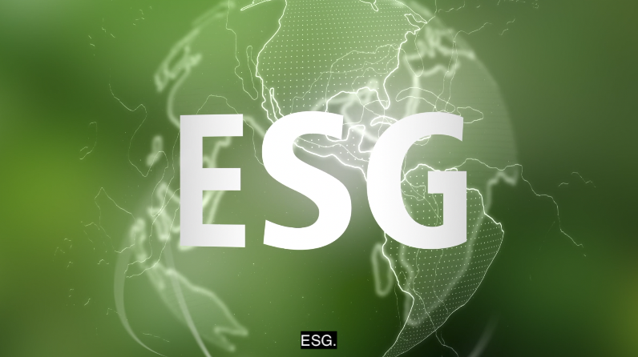
"ESG에 대해서도 좀 설명을 드려볼게요. ESG. 알파벳 세 글자인데요, 별거 아니에요."
스톡영상 사용
CUT 09
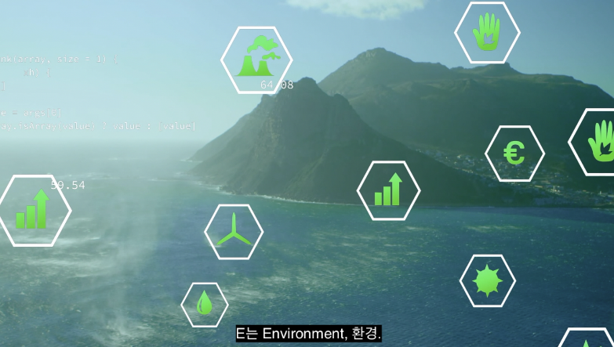
"E는 Environment, 환경. S는 Social, 사회."
스톡영상 사용
CUT 10

"G는 Governance, 윤리적 책임."
스톡영상 사용
CUT 11

"쉽게 말해서 '환경도 생각하고, 이웃도 챙기고, 올바르게 행동하자.' 이 세 가지예요."
스톡영상 사용
CUT 12
"보통 기업에서 많이 쓰는 말이긴 한데요, 사실 우리 간호학과 학생들은 이미 이걸 하고 있거든요. 모르고 있었을 뿐이에요."
스톡영상 사용
CUT 13
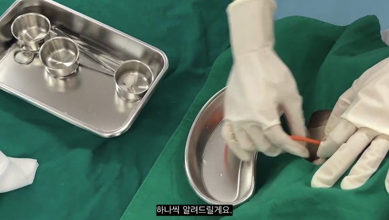
"하나씩 알려드릴게요."
실습실 도구 클로즈업 사용
CUT 14 · E (환경)
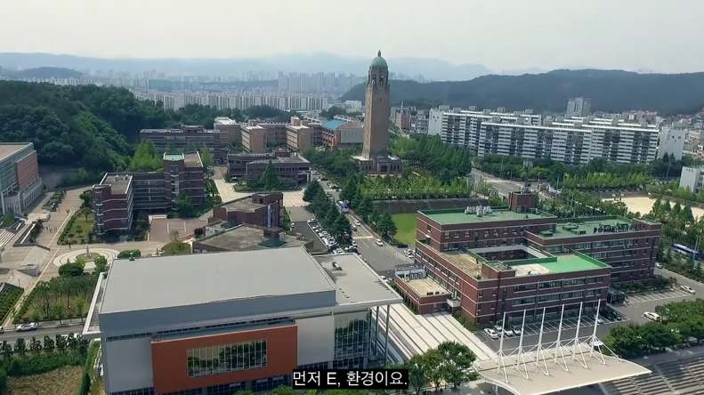
"먼저 E, 환경이요."
우리학교 찍은 영상, 나무나 숲 나온 영상도 좋습니다. 없으면 스톡이미지 사용하겠습니다.
CUT 15
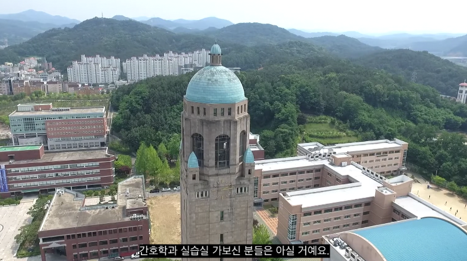
"간호학과 실습실 가보신 분들은 아실 거예요."
학교 랜드마크(시계탑) 항공샷 활용
CUT 16
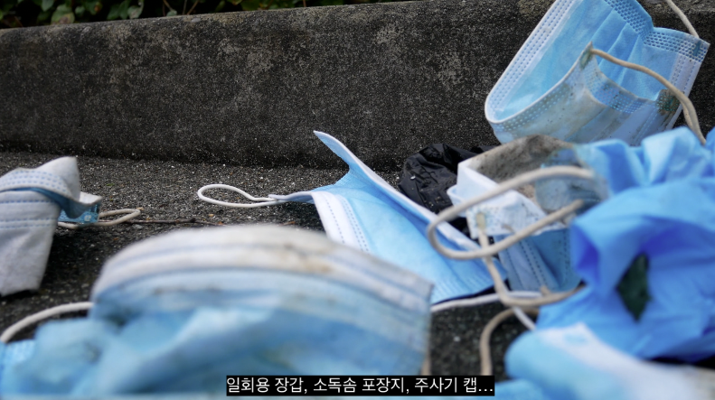
"일회용 장갑, 소독솜 포장지, 주사기 캡…"
여기부터 실습실에 있는 쓰레기통 찍어주세요. 사진·영상 많이많이!
CUT 17
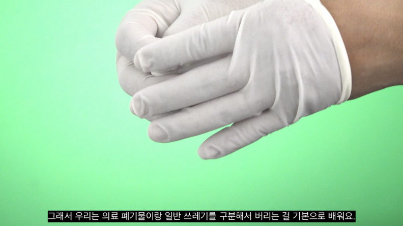
"실습 한 번 하고 나면 쓰레기가 정말 많이 나오거든요. 그래서 우리는 의료 폐기물이랑 일반 쓰레기를 구분해서 버리는 걸 기본으로 배워요."
스톡이미지처럼 장갑 벗는 영상, 폐기물 버리는 영상 다양하게.
CUT 18
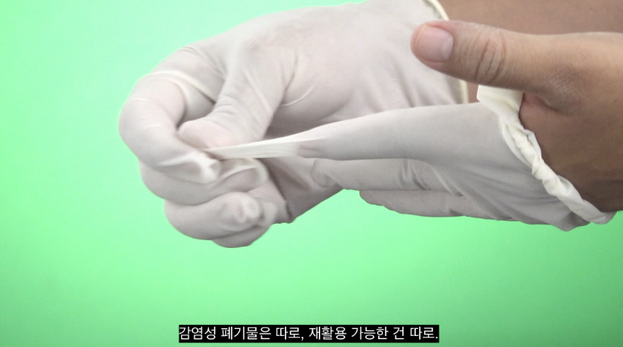
"감염성 폐기물은 따로, 재활용 가능한 건 따로."
감염성 / 재활용 분리하는 모습 강조
CUT 19
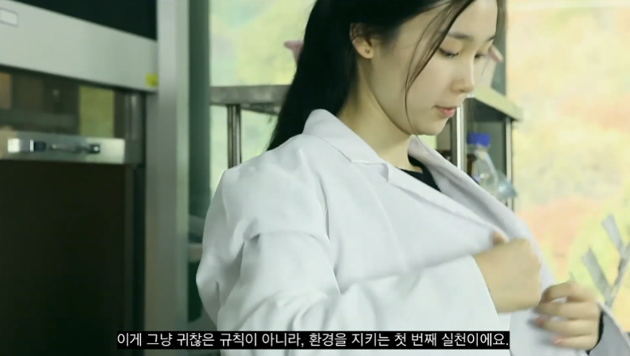
"이게 그냥 귀찮은 규칙이 아니라, 환경을 지키는 첫 번째 실천이에요."
스톡이미지처럼 가운 입거나 벗는 영상 넣으면 좋을 것 같습니다.
CUT 20
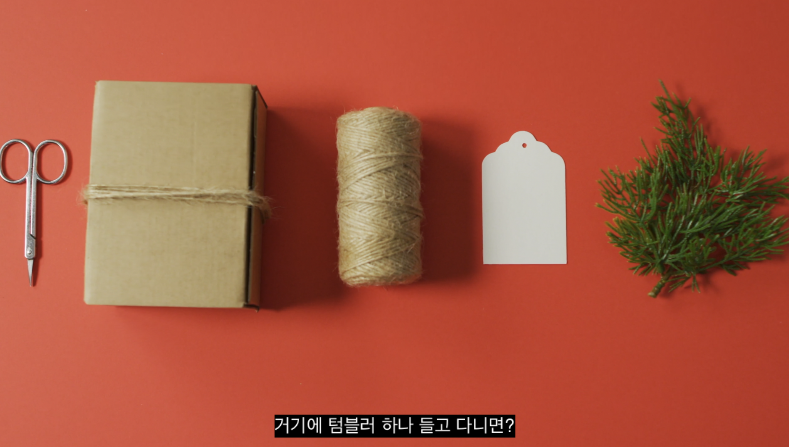
"거기에 텀블러 하나 들고 다니면? 완벽하죠."
텀블러 말고 다른 것 넣어도 됩니다. 굳이 자막이랑 영상이 딱딱 맞을 필요는 없습니다. 대사를 바꿔도 됩니다.
CUT 21
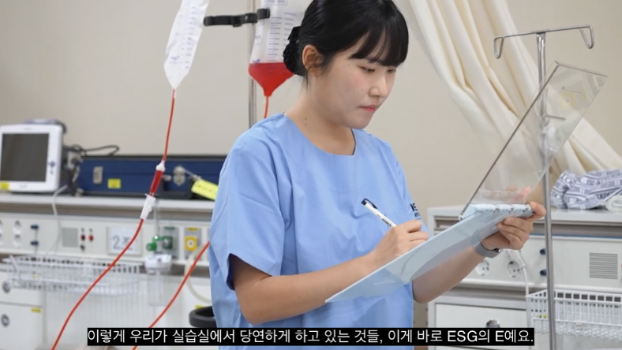
"이렇게 우리가 실습실에서 당연하게 하고 있는 것들, 이게 바로 ESG의 E예요."
차트 들고 있는 모습, 실습실 문을 열고 들어가는 모습 등등
CUT 22 · S (사회)
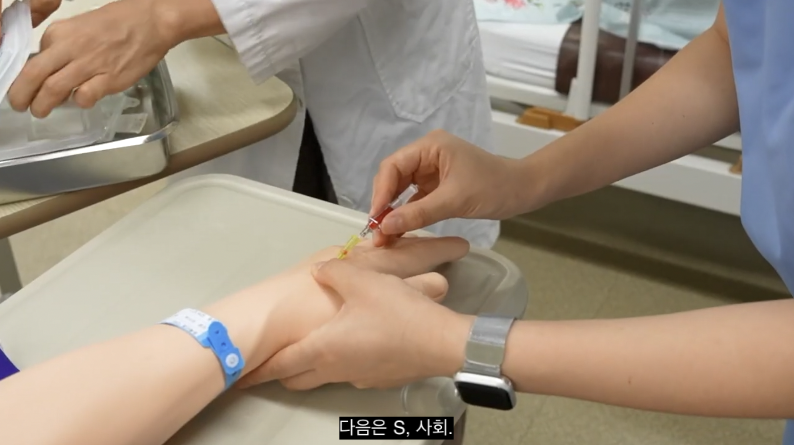
"다음은 S, 사회."
스톡이미지 사용
CUT 23
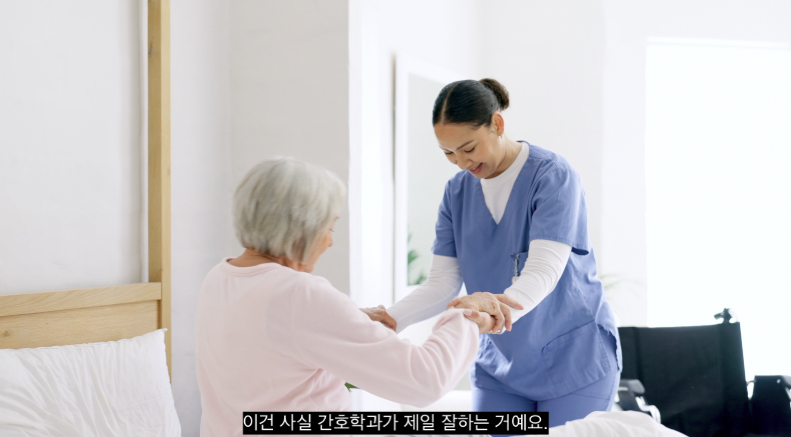
"이건 사실 간호학과가 제일 잘하는 거예요."
환자 돌봄 장면 스톡영상 사용
CUT 24
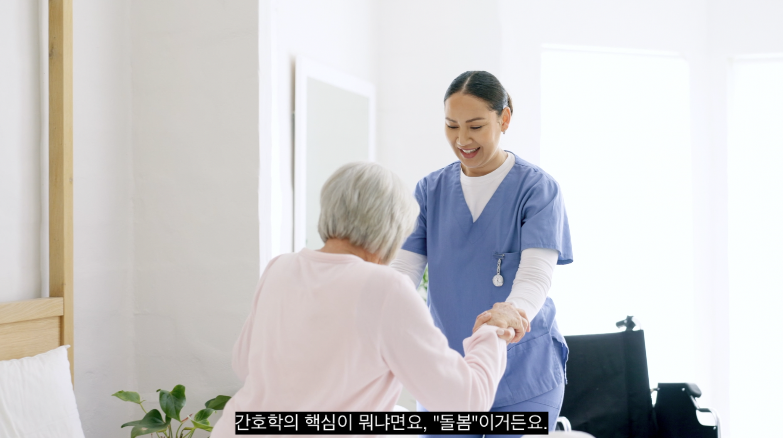
"간호학의 핵심이 뭐냐면요, '돌봄'이거든요."
돌봄 장면 — 따뜻한 분위기 강조
CUT 25
"사람을 살피고, 아픈 사람 곁에 있어주는 거요."
환자 곁을 지키는 모습 스톡영상 활용
🎬 여기서부터 추가 영상 분량 필요
CUT 26 · 추가 촬영 필요
"우리 학과 학생들, 지역사회 봉사활동 나가서 어르신들 혈압도 재드리고, 건강 상담도 해드리잖아요."
실습실 바이탈사인 재는 모습 직접 촬영 필요
CUT 27 · 추가 촬영 필요
"학교 안에서도 친구들한테 심폐소생술 알려주고,"
칠판이나 교탁에서 설명하는 모습 (학생들은 AI로 편집해서 넣어보겠습니다)
CUT 28 · 추가 촬영 필요
"올바른 손씻기 방법도 알려주고요."
손씻기 방법 (여러 가지, 손소독 비누 등)
CUT 29 · 추가 촬영 필요
"이렇게 내가 배운 걸 주변 사람들과 나누는 것, 이게 바로 ESG의 S예요."
S 로고 스톡이미지 사용
CUT 30 · 추가 촬영 필요
"나누면 두 배가 되는 거, 간호학과 학생들은 이미 알고 있잖아요."
학생들이 함께하는 모습
📚 G (Governance) 파트
CUT 31 · 추가 촬영 필요
"마지막으로 G, 윤리적 책임이에요."
간호학과 책이나 실습실 용품 클로즈업
CUT 32 · 추가 촬영 필요
"이건 좀 진지한 얘기인데요. 우리가 다루는 건 사람의 몸이고, 사람의 생명이에요."
실습실 인체 모형 사진/클로즈업, 옆으로 지나가면서 찍으면 알아서 편집하겠습니다.
CUT 33 · 추가 촬영 필요
"그래서 간호학과에서는 생명 윤리, 환자의 개인정보 보호, 정직한 기록 작성 같은 걸 정말 중요하게 배워요."
스톡이미지 사용
CUT 34 · 추가 촬영 필요
"실습 기록 하나 쓸 때도 있는 그대로 정확하게 써야 하고, 환자의 비밀은 절대 함부로 말하면 안 되죠."
"쉿" 하는 스톡이미지 활용
CUT 35 · 추가 촬영 필요
"이런 게 왜 중요하냐면, 나중에 우리가 현장에 나갔을 때 환자가 우리를 믿고 맡길 수 있으려면, 지금부터 그 신뢰를 쌓아야 하거든요."
환자에게 말 거는 모습
CUT 36 · 추가 촬영 필요
"이게 바로 ESG의 G예요."
스톡 G 이미지 사용
🎯 마무리 / 정리 파트
CUT 37 · 정리
"자, 정리해 볼게요. 실습실에서 폐기물 똑바로 분리하는 것, E. 배운 걸 지역사회와 나누는 것, S. 정직하고 윤리적으로 행동하는 것, G."
앞서 들어갔던 장면들 편집해서 재사용 또는 스톡이미지
CUT 38 · 학교 전경
"거창한 게 아니에요. 우리가 간호학과에서 매일 하고 있는 것들이 이미 ESG였어요. 대전과학기술대학교 간호학과."
학교 전경, 스톡이미지 활용
CUT 39 · 엔딩
"따뜻하게 돌보고, 올바르게 행동하는 사람들이 모인 곳. 이게 바로 간호학과 사용설명서입니다."
마지막 — 우리 대학 로고, ESG, 사용설명서 AI로 깔끔하게 편집. 마무리.